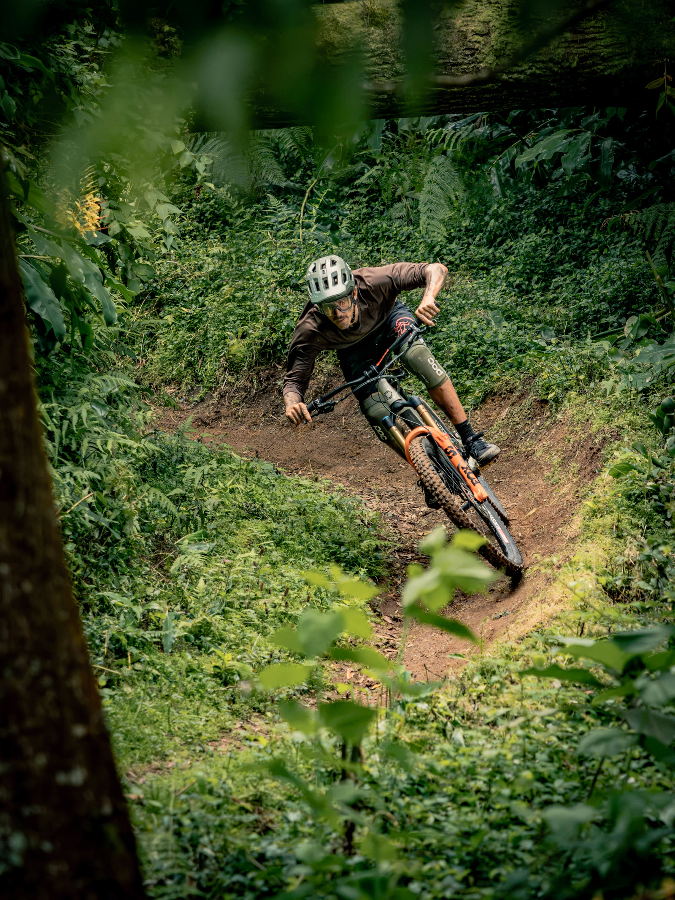

Bookings
wheelsonfireazores@gmail.com
Follow
Instagram YouTube
MTB adventures — S. Miguel

The wall
Films, loops, posters, photographs. Shot on the island, mostly in the rain, mostly with mud on the lens. Pick anything.
Still 1 / 1
 Get in touch
Get in touch
Get in touch
Get in touch